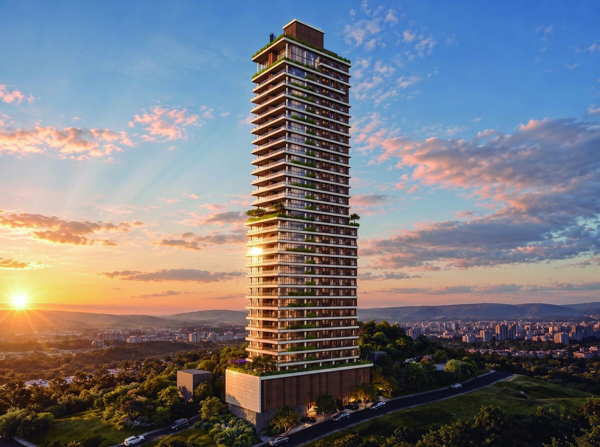
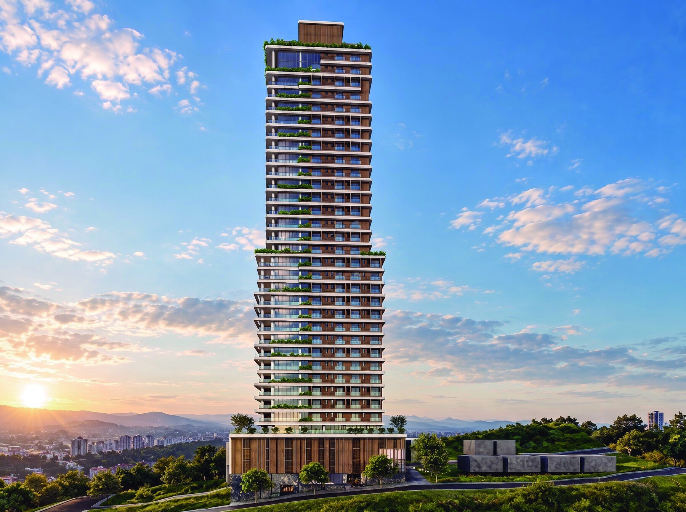
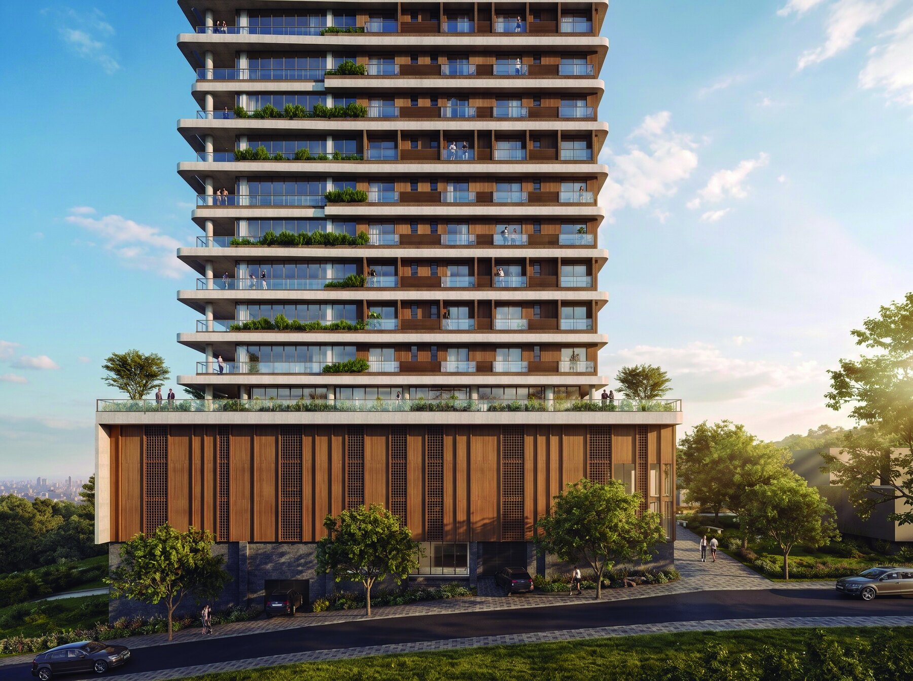
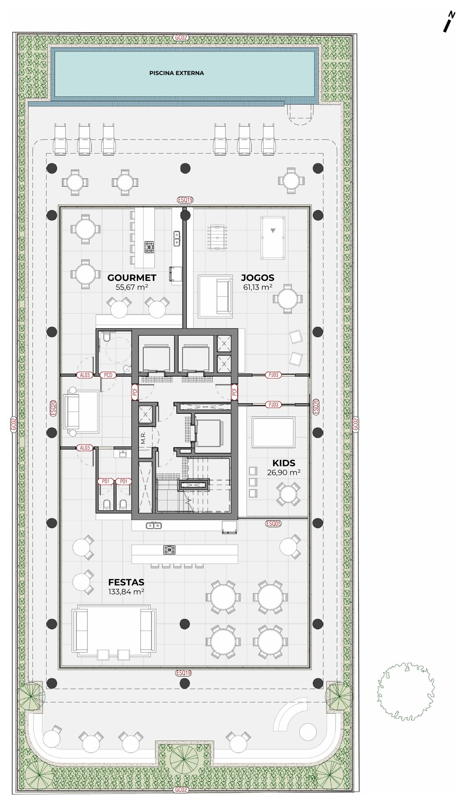
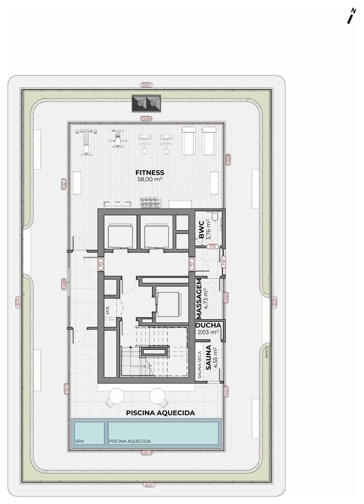

SKY
Entre a cidade e o céu.
Residências no alto da Agronômica, com vistas que alcançam a baía, a cidade e o horizonte de Florianópolis.
Comercialização exclusiva · Norden Imóveis
Uma nova altura para morar em Florianópolis.
O SKY nasce no coração da Agronômica — a poucos minutos da Beira-Mar Norte, do centro e da ponte — e se eleva para oferecer o que a cidade tem de mais raro: a vista. Luz natural, amplitude e o horizonte da baía como paisagem diária.
Cada pavimento foi pensado para unir privacidade, fluidez entre os ambientes e varandas generosas, num edifício que traduz sofisticação em cada detalhe — da chegada à cobertura.
Um endereço central, conectado e valorizado.
Na Rua Joaquim Costa, o SKY está a passos da Beira-Mar Norte e do centro, numa das regiões mais bem localizadas da cidade — perto de tudo, com a tranquilidade de uma rua residencial.
A vista de quem vive no alto.
Um panorama do entorno, na Agronômica, e da vista que os pavimentos mais altos do SKY terão — da baía ao horizonte de Florianópolis.

Uma torre de terraços, verde e luz.
Assinada pela AF Arquitetura, a fachada do SKY se compõe de terraços escalonados e jardins suspensos que acompanham a verticalidade do edifício. Linhas contemporâneas, brises de madeira e varandas amplas criam uma presença elegante na paisagem — e enquadram a vista a cada andar.
Residências de alto padrão, do térreo à cobertura.
Lojas no térreo com fruição pública, apartamentos de três e quatro suítes, lofts duplex e uma cobertura exclusiva com piscina aquecida. Vagas duplas, bicicletário e hobby box completam a infraestrutura.

Espaços para viver, receber e relaxar.

Plantas amplas, pensadas para o alto padrão.
Áreas privativas de 180 a 278 m², com três ou quatro suítes, lofts duplex e a cobertura exclusiva.

O ponto mais alto do SKY.
No topo do edifício, a cobertura reúne piscina aquecida, fitness, sauna e sala de massagem — um andar inteiro dedicado ao bem-estar, com a melhor vista da torre.
Alto padrão a preço de custo, no modelo de cotas.
Empreendimento estruturado em regime de administração a preço de custo, por meio de SPE — Sociedade de Propósito Específico.
Cada cota representa os direitos de uma unidade, com participação societária proporcional à área adquirida.
Investimento diluído ao longo da obra, com parcelas reajustadas pelo CUB/m² médio residencial.
Valores no modelo a preço de custo. Tabela completa de unidades e condições disponíveis sob consulta.
Receber a tabela completaNo modelo a preço de custo (SPE), o investimento é diluído ao longo da obra — um aporte inicial (em até 8×), parcelas mensais e reforços semestrais, com reajuste pelo CUB/m² médio residencial. A composição detalhada e os valores por unidade são apresentados por um especialista da Norden.
Agende uma apresentação privativa do SKY.
Conheça as plantas, a cobertura e a tabela de cotas com um especialista da Norden Imóveis. Atendimento consultivo, no seu tempo.
WhatsApp (48) 0 0000-0000Comercialização exclusiva Norden Imóveis · @nordenimoveis · Imagens meramente ilustrativas.